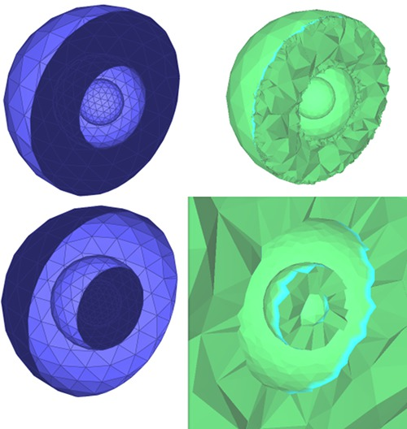
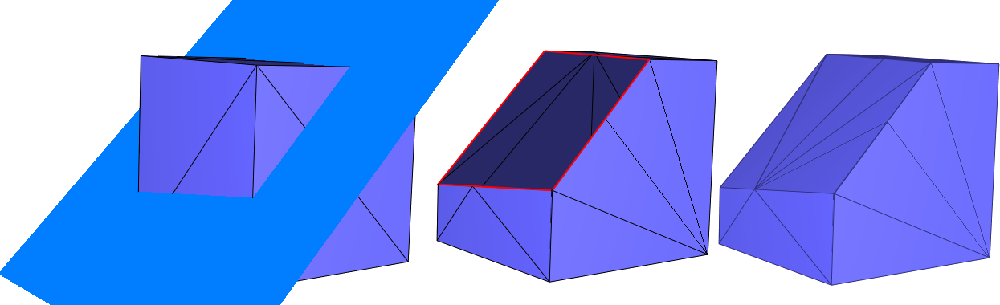
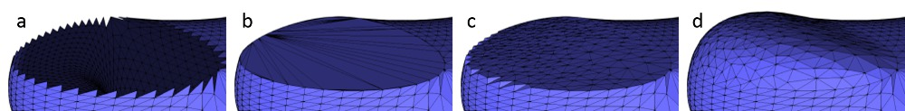
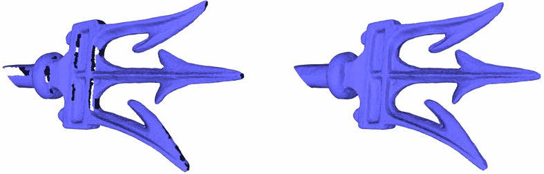
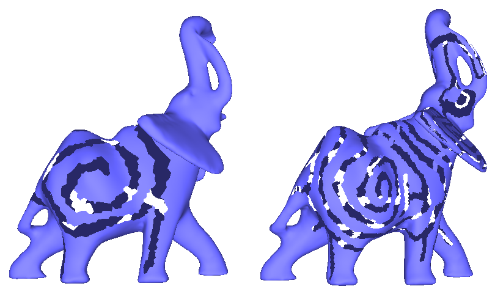
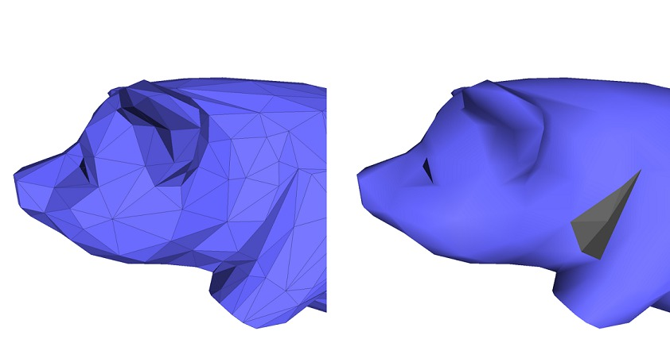
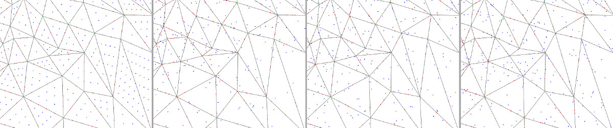

- Authors
- Sébastien Loriot, Jane Tournois, Ilker O. Yaz
Introduction
This package implements a collection of methods and classes for polygon mesh processing, ranging from basic operations on simplices, to complex geometry processing algorithms. The implementation of this package mainly follows algorithms and references given in Botsch et al.'s book on polygon mesh processing [4].
Polygon Mesh
A polygon mesh is a consistent and orientable surface mesh, that can have one or more boundaries. The faces are simple polygons. The edges are segments. Each edge connects two vertices, and is shared by two faces (including the null face for boundary edges). A polygon mesh can have any number of connected components, and also some self-intersections. In this package, a polygon mesh is considered to have the topology of a 2-manifold.
API
This package follows the BGL API described in CGAL and the Boost Graph Library. It can thus be used either with Polyhedron_3, Surface_mesh, or any class model of the concept FaceGraph. Each function or class of this package details the requirements on the input polygon mesh.
Named Parameters are used to deal with optional parameters. The page Named Parameters for Polygon Mesh Processing describes their usage and provides a list of the parameters that are used in this package.
Outline
The algorithms described in this manual are organized in sections:
- Meshing : meshing algorithms, including triangulation of non-triangulated meshes, refinement, optimization by fairing, and isotropic remeshing of triangulated surface meshes.
- Corefinement and Boolean Operations : methods to corefine triangle meshes and to compute boolean operations out of corefined closed triangle meshes.
- Hole Filling : available hole filling algorithms, which can possibly be combined with refinement and fairing.
- Predicates : predicates that can be evaluated on the processed polygon mesh, which includes point location and self intersection tests.
- Orientation : checking or fixing the Orientation of a polygon soup.
- Combinatorial Repairing : reparation of polygon meshes and polygon soups.
- Computing Normals : normal computation at vertices and on faces of a polygon mesh.
- Slicer : functor able to compute the intersections of a polygon mesh with arbitrary planes (slicer).
- Connected Components : methods to deal with connected components of a polygon mesh (extraction, marks, removal, ...)
Meshing
A surface patch can be refined by inserting new vertices and flipping edges to get a triangulation. Using a criterion presented in [6], the density of triangles near the boundary of the patch is approximated by the refinement function. The validity of the mesh is enforced by flipping edges. An edge is flipped only if the opposite edge does not exist in the original mesh and if no degenerate triangles are generated.
A region of the surface mesh (e.g. the refined region), can be faired to obtain a tangentially continuous and smooth surface patch. The region to be faired is defined as a range of vertices that are relocated. The fairing step minimizes a linear bi-Laplacian system with boundary constraints, described in [3]. The visual results of aforementioned steps are depicted by Figure 61.7 (c and d).
API
Meshing
Refinement and fairing functions can be applied to an arbitrary region on a triangle mesh, using :
Fairing needs a sparse linear solver and we recommend the use of Eigen 3.2 or later. Note that fairing might fail if fixed vertices, which are used as boundary conditions, do not suffice to solve the constructed linear system.
Many algorithms require as input meshes in which all the faces have the same degree, or even are triangles. Hence, one may want to triangulate all polygon faces of a mesh.
This package provides the function CGAL::Polygon_mesh_processing::triangulate_faces() that triangulates all faces of the input polygon mesh. An approximated support plane is chosen for each face, orthogonal to the normal vector computed by CGAL::Polygon_mesh_processing::compute_face_normal(). Then, the triangulation of each face is the one obtained by building a CGAL::Constrained_Delaunay_triangulation_2 in this plane. This choice is made because the constrained Delaunay triangulation is the triangulation that, given the edges of the face to be triangulated, maximizes the minimum angle of all the angles of the triangles in the triangulation.
Remeshing
The incremental triangle-based isotropic remeshing algorithm introduced by Botsch et al [2], [4] is implemented in this package. This algorithm incrementally performs simple operations such as edge splits, edge collapses, edge flips, and Laplacian smoothing. All the vertices of the remeshed patch are reprojected to the original surface to keep a good approximation of the input.
A triangulated region of a polygon mesh can be remeshed using the function CGAL::Polygon_mesh_processing::isotropic_remeshing(), as illustrated by Figure 61.1. The algorithm has only two parameters : the target edge length for the remeshed surface patch, and the number of iterations of the abovementioned sequence of operations. The bigger this number, the smoother and closer to target edge length the mesh will be.
An additional option has been added to protect (i.e. not modify) some given polylines. In some cases, those polylines are too long, and reaching the desired target edge length while protecting them is not possible and leads to an infinite loop of edge splits in the incident faces. To avoid that pitfall, the function CGAL::Polygon_mesh_processing::split_long_edges() should be called on the list of constrained edges before remeshing.
Meshing Examples
Refine and Fair a Region on a Triangle Mesh
The following example calls the functions CGAL::Polygon_mesh_processing::refine() and CGAL::Polygon_mesh_processing::fair() for some selected regions on the input triangle mesh.
File Polygon_mesh_processing/refine_fair_example.cpp
#include <CGAL/Exact_predicates_inexact_constructions_kernel.h>
#include <CGAL/Polyhedron_3.h>
#include <CGAL/Polygon_mesh_processing/refine.h>
#include <CGAL/Polygon_mesh_processing/fair.h>
#include <fstream>
#include <map>
typedef Polyhedron::Vertex_handle Vertex_handle;
void extract_k_ring(Vertex_handle v,
int k,
std::vector<Vertex_handle>& qv)
{
std::map<Vertex_handle, int> D;
qv.push_back(v);
D[v] = 0;
std::size_t current_index = 0;
int dist_v;
while (current_index < qv.size() && (dist_v = D[qv[current_index]]) < k)
{
v = qv[current_index++];
Polyhedron::Halfedge_around_vertex_circulator e(v->vertex_begin()), e_end(e);
do {
Vertex_handle new_v = e->opposite()->vertex();
if (D.insert(std::make_pair(new_v, dist_v + 1)).second) {
qv.push_back(new_v);
}
} while (++e != e_end);
}
}
int main(int argc, char* argv[])
{
const char* filename = (argc > 1) ? argv[1] : "data/blobby.off";
std::ifstream input(filename);
Polyhedron poly;
if ( !input || !(input >> poly) || poly.empty()
std::cerr << "Not a valid input file." << std::endl;
return 1;
}
std::vector<Polyhedron::Facet_handle> new_facets;
std::vector<Vertex_handle> new_vertices;
faces(poly),
std::back_inserter(new_facets),
std::back_inserter(new_vertices),
CGAL::Polygon_mesh_processing::parameters::density_control_factor(2.));
std::ofstream refined_off("refined.off");
refined_off << poly;
refined_off.close();
std::cout << "Refinement added " << new_vertices.size() << " vertices." << std::endl;
Polyhedron::Vertex_iterator v = poly.vertices_begin();
std::advance(v, 82);
std::vector<Vertex_handle> region;
extract_k_ring(v, 12, region);
std::cout << "Fairing : " << (success ? "succeeded" : "failed") << std::endl;
std::ofstream faired_off("faired.off");
faired_off << poly;
faired_off.close();
return 0;
}
Triangulate a Polygon Mesh
Triangulating a polygon mesh can be achieved through the function CGAL::Polygon_mesh_processing::triangulate_faces() as shown in the following example.
File Polygon_mesh_processing/triangulate_faces_example.cpp
#include <CGAL/Exact_predicates_inexact_constructions_kernel.h>
#include <CGAL/Surface_mesh.h>
#include <CGAL/Polygon_mesh_processing/triangulate_faces.h>
#include <boost/foreach.hpp>
#include <fstream>
int main(int argc, char* argv[])
{
const char* filename = (argc > 1) ? argv[1] : "data/P.off";
const char* outfilename = (argc > 2) ? argv[2] : "P_tri.off";
std::ifstream input(filename);
Surface_mesh mesh;
if (!input || !(input >> mesh) || mesh.is_empty())
{
std::cerr << "Not a valid off file." << std::endl;
return 1;
}
BOOST_FOREACH(boost::graph_traits<Surface_mesh>::face_descriptor fit, faces(mesh))
if (
next(
next(halfedge(fit, mesh), mesh), mesh)
!=
prev(halfedge(fit, mesh), mesh))
std::cerr << "Error: non-triangular face left in mesh." << std::endl;
std::ofstream cube_off(outfilename);
cube_off << mesh;
return 0;
}
Isotropic Remeshing of a Region on a Polygon Mesh
The following example shows a complete example of how the isotropic remeshing function can be used. First, the border of the polygon mesh is collected. Since the boundary edges will be considered as constrained and protected in this example, the function split_long_edges() is called first on these edges.
Once this is done, remeshing is run on all the surface, with protection of constraints activated, for 3 iterations.
File Polygon_mesh_processing/isotropic_remeshing_example.cpp
#include <CGAL/Exact_predicates_inexact_constructions_kernel.h>
#include <CGAL/Surface_mesh.h>
#include <CGAL/Polygon_mesh_processing/remesh.h>
#include <CGAL/Polygon_mesh_processing/border.h>
#include <boost/function_output_iterator.hpp>
#include <fstream>
#include <vector>
typedef boost::graph_traits<Mesh>::halfedge_descriptor halfedge_descriptor;
typedef boost::graph_traits<Mesh>::edge_descriptor edge_descriptor;
struct halfedge2edge
{
halfedge2edge(const Mesh& m, std::vector<edge_descriptor>& edges)
: m_mesh(m), m_edges(edges)
{}
void operator()(const halfedge_descriptor& h) const
{
m_edges.push_back(edge(h, m_mesh));
}
const Mesh& m_mesh;
std::vector<edge_descriptor>& m_edges;
};
int main(int argc, char* argv[])
{
const char* filename = (argc > 1) ? argv[1] : "data/pig.off";
std::ifstream input(filename);
Mesh mesh;
std::cerr << "Not a valid input file." << std::endl;
return 1;
}
double target_edge_length = 0.04;
unsigned int nb_iter = 3;
std::cout << "Split border...";
std::vector<edge_descriptor> border;
mesh,
boost::make_function_output_iterator(halfedge2edge(mesh, border)));
std::cout << "done." << std::endl;
std::cout << "Start remeshing of " << filename
<< " (" << num_faces(mesh) << " faces)..." << std::endl;
faces(mesh),
target_edge_length,
mesh,
PMP::parameters::number_of_iterations(nb_iter)
.protect_constraints(true)
);
std::cout << "Remeshing done." << std::endl;
return 0;
}
Corefinement and Boolean Operations
Definitions
Corefinement Given two triangulated surface meshes, the corefinement operation consists in refining both meshes so that their intersection polylines are a subset of edges in both refined meshes.

Volume bounded by a triangulated surface mesh Given a closed triangulated surface mesh, each connected component splits the 3D space into two subspaces. The vertex sequence of each face of a component is seen either clockwise or counterclockwise from these two subspaces. The subspace that sees the sequence clockwise (resp. counterclockwise) is on the negative (resp. positive) side of the component. Given a closed triangulated surface mesh tm with no self-intersections, the connected components of tm divide the 3D space into subspaces. We say that tm bounds a volume if each subspace lies exclusively on the positive (or negative) side of all the incident connected components of tm. The volume bounded by tm is the union of all subspaces that are on negative sides of their incident connected components of tm.

Corefinement
The corefinement of two triangulated surface meshes can be done using the function CGAL::Polygon_mesh_processing::corefine(). It takes as input the two triangulated surface meshes to corefine. If constrained edge maps are provided, edges belonging to the intersection of the input meshes will be marked as constrained. In addition, if an edge that was marked as constrained is split during the corefinement, sub-edges will be marked as constrained as well.
Boolean Operations
The corefinement of two triangulated surface meshes can naturally be used for computing Boolean operations on volumes. Considering two triangulated surface meshes, each bounding a volume, the functions CGAL::Polygon_mesh_processing::corefine_and_compute_union(), CGAL::Polygon_mesh_processing::corefine_and_compute_intersection() and CGAL::Polygon_mesh_processing::corefine_and_compute_difference() respectively compute the union, the intersection and the difference of the two volumes. If several Boolean operations must be computed at the same time, the function corefine_and_compute_boolean_operations() should be used.
There is no restriction on the topology of the input volumes. However, there are some requirements on the input to guarantee that the operation is possible. First, the input meshes must not self-intersect. Second, the operation is possible only if the output can be bounded by a manifold triangulated surface mesh. In particular this means that the output volume has no part with zero thickness. Mathematically speaking, the intersection with an infinitesimally small ball centered in the output volume is a topological ball. At the surface level this means that no non-manifold vertex or edge is allowed in the output. For example, it is not possible to compute the union of two cubes that are disjoint but sharing an edge. In case you have to deal with such scenarios, you should consider using the package 3D Boolean Operations on Nef Polyhedra.
It is possible to update the input so that it contains the result (in-place operation). In that case the whole mesh will not be copied and only the region around the intersection polyline will be modified. In case the Boolean operation is not possible, the input mesh will nevertheless be corefined.
Kernel and Validity of the Output
The corefinement operation (which is also internally used in the three Boolean operations) will correctly change the topology of the input surface mesh if the point type used in the point property maps of the input meshes is from a CGAL Kernel with exact predicates. If that kernel does not have exact constructions, the embedding of the output surface mesh might have self-intersections. In case of consecutive operations, it is thus recommended to use a point property map with points from a kernel with exact predicates and exact constructions (such as CGAL::Exact_predicates_exact_constructions_kernel).
In practice, this means that with exact predicates and inexact constructions, edges will be split at each intersection with a triangle but the position of the intersection point might create self-intersections due to the limited precision of floating point numbers.
Clipping
As a natural extension, some clipping functionalities with a volume bounded by a closed mesh and a halfspace (defined by the negative side of a plane to be consistent with the outward normal convention) are offered. The functions CGAL::Polygon_mesh_processing::clip() have some options to select whether the clipping should be done at the volume or surface level, and also if the clipper should be considered as compact or not. This is illustrated on Figure 61.5 and Figure 61.6.

Examples
Computing the Union of Two Volumes
File Polygon_mesh_processing/corefinement_mesh_union.cpp
#include <CGAL/Exact_predicates_inexact_constructions_kernel.h>
#include <CGAL/Surface_mesh.h>
#include <CGAL/Polygon_mesh_processing/corefinement.h>
#include <fstream>
int main(int argc, char* argv[])
{
const char* filename1 = (argc > 1) ? argv[1] : "data/blobby.off";
const char* filename2 = (argc > 2) ? argv[2] : "data/eight.off";
std::ifstream input(filename1);
Mesh mesh1, mesh2;
if (!input || !(input >> mesh1))
{
std::cerr << "First mesh is not a valid off file." << std::endl;
return 1;
}
input.close();
input.open(filename2);
if (!input || !(input >> mesh2))
{
std::cerr << "Second mesh is not a valid off file." << std::endl;
return 1;
}
Mesh out;
if (valid_union)
{
std::cout << "Union was successfully computed\n";
std::ofstream output("union.off");
output << out;
return 0;
}
std::cout << "Union could not be computed\n";
return 1;
}
Boolean Operation and Local Remeshing
This example is similar to the previous one, but here we substract a volume and update the first input triangulated surface mesh (in-place operation). The edges that are on the intersection of the input meshes are marked and the region around them is remeshed isotropically while preserving the intersection polyline.
File Polygon_mesh_processing/corefinement_difference_remeshed.cpp
#include <CGAL/Exact_predicates_inexact_constructions_kernel.h>
#include <CGAL/Surface_mesh.h>
#include <CGAL/Polygon_mesh_processing/corefinement.h>
#include <CGAL/Polygon_mesh_processing/remesh.h>
#include <CGAL/boost/graph/selection.h>
#include <fstream>
typedef boost::graph_traits<Mesh>::edge_descriptor edge_descriptor;
typedef boost::graph_traits<Mesh>::face_descriptor face_descriptor;
typedef boost::graph_traits<Mesh>::halfedge_descriptor halfedge_descriptor;
namespace params = PMP::parameters;
struct Vector_pmap_wrapper{
std::vector<bool>& vect;
Vector_pmap_wrapper(std::vector<bool>& v) : vect(v) {}
friend bool get(const Vector_pmap_wrapper& m, face_descriptor f)
{
return m.vect[f];
}
friend void put(const Vector_pmap_wrapper& m, face_descriptor f, bool b)
{
m.vect[f]=b;
}
};
int main(int argc, char* argv[])
{
const char* filename1 = (argc > 1) ? argv[1] : "data/blobby.off";
const char* filename2 = (argc > 2) ? argv[2] : "data/eight.off";
std::ifstream input(filename1);
Mesh mesh1, mesh2;
if (!input || !(input >> mesh1))
{
std::cerr << "First mesh is not a valid off file." << std::endl;
return 1;
}
input.close();
input.open(filename2);
if (!input || !(input >> mesh2))
{
std::cerr << "Second mesh is not a valid off file." << std::endl;
return 1;
}
Mesh::Property_map<edge_descriptor,bool> is_constrained_map =
mesh1.add_property_map<edge_descriptor,bool>("e:is_constrained", false).first;
bool valid_difference =
mesh2,
mesh1,
params::all_default(),
params::all_default(),
params::edge_is_constrained_map(is_constrained_map));
if (valid_difference)
{
std::cout << "Difference was successfully computed\n";
std::ofstream output("difference.off");
output << mesh1;
}
else{
std::cout << "Difference could not be computed\n";
return 1;
}
std::vector<face_descriptor> selected_faces;
std::vector<bool> is_selected(num_faces(mesh1), false);
BOOST_FOREACH(edge_descriptor e, edges(mesh1))
if (is_constrained_map[e])
{
BOOST_FOREACH(halfedge_descriptor h,
{
{
face_descriptor f=face(h, mesh1);
if ( !is_selected[f] )
{
selected_faces.push_back(f);
is_selected[f]=true;
}
}
}
}
Vector_pmap_wrapper(is_selected), std::back_inserter(selected_faces));
std::cout << selected_faces.size()
<< " faces were selected for the remeshing step\n";
selected_faces,
0.02,
mesh1,
params::edge_is_constrained_map(is_constrained_map) );
std::ofstream output("difference_remeshed.off");
output << mesh1;
return 0;
}
Robustness of Consecutive Operations
This example computes the intersection of two volumes and then does the union of the result with one of the input volumes. This operation is in general not possible when using inexact constructions. Instead of using a mesh with a point from a kernel with exact constructions, the exact points are a property of the mesh vertices that we can reuse in a later operations. With that property, we can manipulate a mesh with points having floating point coordinates but benefit from the robustness provided by the exact constructions.
File Polygon_mesh_processing/corefinement_consecutive_bool_op.cpp
#include <CGAL/Exact_predicates_inexact_constructions_kernel.h>
#include <CGAL/Exact_predicates_exact_constructions_kernel.h>
#include <CGAL/Surface_mesh.h>
#include <CGAL/Polygon_mesh_processing/corefinement.h>
#include <fstream>
typedef boost::graph_traits<Mesh>::vertex_descriptor vertex_descriptor;
typedef Mesh::Property_map<vertex_descriptor,EK::Point_3> Exact_point_map;
typedef Mesh::Property_map<vertex_descriptor,bool> Exact_point_computed;
namespace params = PMP::parameters;
struct Coref_point_map
{
typedef boost::property_traits<Exact_point_map>::value_type value_type;
typedef boost::property_traits<Exact_point_map>::reference reference;
typedef boost::property_traits<Exact_point_map>::category category;
typedef boost::property_traits<Exact_point_map>::key_type key_type;
Exact_point_computed* exact_point_computed_ptr;
Exact_point_map* exact_point_ptr;
Mesh* mesh_ptr;
Exact_point_computed& exact_point_computed() const
{
CGAL_assertion(exact_point_computed_ptr!=NULL);
return *exact_point_computed_ptr;
}
Exact_point_map& exact_point() const
{
CGAL_assertion(exact_point_ptr!=NULL);
return *exact_point_ptr;
}
Mesh& mesh() const
{
CGAL_assertion(mesh_ptr!=NULL);
return *mesh_ptr;
}
Coref_point_map()
: exact_point_computed_ptr(NULL)
, exact_point_ptr(NULL)
, mesh_ptr(NULL)
{}
Coref_point_map(Exact_point_map& ep,
Exact_point_computed& epc,
Mesh& m)
: exact_point_computed_ptr(&epc)
, exact_point_ptr(&ep)
, mesh_ptr(&m)
{}
friend
reference get(const Coref_point_map& map, key_type k)
{
if (!map.exact_point_computed()[k]){
map.exact_point()[k]=map.to_exact(map.mesh().point(k));
map.exact_point_computed()[k]=true;
}
return map.exact_point()[k];
}
friend
void put(const Coref_point_map& map, key_type k, const EK::Point_3& p)
{
map.exact_point_computed()[k]=true;
map.exact_point()[k]=p;
map.mesh().point(k)=map.to_input(p);
}
};
int main(int argc, char* argv[])
{
const char* filename1 = (argc > 1) ? argv[1] : "data/blobby.off";
const char* filename2 = (argc > 2) ? argv[2] : "data/eight.off";
std::ifstream input(filename1);
Mesh mesh1, mesh2;
if (!input || !(input >> mesh1))
{
std::cerr << "First mesh is not a valid off file." << std::endl;
return 1;
}
input.close();
input.open(filename2);
if (!input || !(input >> mesh2))
{
std::cerr << "Second mesh is not a valid off file." << std::endl;
return 1;
}
Exact_point_map mesh1_exact_points =
mesh1.add_property_map<vertex_descriptor,EK::Point_3>("e:exact_point").first;
Exact_point_computed mesh1_exact_points_computed =
mesh1.add_property_map<vertex_descriptor,bool>("e:exact_points_computed").first;
Exact_point_map mesh2_exact_points =
mesh2.add_property_map<vertex_descriptor,EK::Point_3>("e:exact_point").first;
Exact_point_computed mesh2_exact_points_computed =
mesh2.add_property_map<vertex_descriptor,bool>("e:exact_points_computed").first;
Coref_point_map mesh1_pm(mesh1_exact_points, mesh1_exact_points_computed, mesh1);
Coref_point_map mesh2_pm(mesh2_exact_points, mesh2_exact_points_computed, mesh2);
mesh2,
mesh1,
params::vertex_point_map(mesh1_pm),
params::vertex_point_map(mesh2_pm),
params::vertex_point_map(mesh1_pm) ) )
{
mesh2,
mesh2,
params::vertex_point_map(mesh1_pm),
params::vertex_point_map(mesh2_pm),
params::vertex_point_map(mesh2_pm) ) )
{
std::cout << "Intersection and union were successfully computed\n";
std::ofstream output("inter_union.off");
output << mesh2;
return 0;
}
std::cout << "Union could not be computed\n";
return 1;
}
std::cout << "Intersection could not be computed\n";
return 1;
}
Hole Filling
This package provides an algorithm for filling one closed hole that is either in a triangulated surface mesh or defined by a sequence of points that describe a polyline. The main steps of the algorithm are described in [6] and can be summarized as follows.
First, the largest patch triangulating the boundary of the hole is generated without introducing any new vertex. The patch is selected so as to minimize a quality function evaluated for all possible triangular patches. The quality function first minimizes the worst dihedral angle between patch triangles, then the total surface area of the patch as a tiebreaker. Following the suggestions in [7], the performance of the algorithm is significantly improved by narrowing the search space to faces of a 3D Delaunay triangulation of the hole boundary vertices, from all possible patches, while searching for the best patch with respect to the aforementioned quality criteria.
For some complicated input hole boundary, the generated patch may have self-intersections. After hole filling, the generated patch can be refined and faired using the meshing functions CGAL::Polygon_mesh_processing::refine() and CGAL::Polygon_mesh_processing::fair() described in Section Meshing.

API
This package provides four functions for hole filling:
Examples
Triangulate a Polyline
The following example triangulates a hole described by an input polyline.
File Polygon_mesh_processing/triangulate_polyline_example.cpp
#include <CGAL/Exact_predicates_inexact_constructions_kernel.h>
#include <CGAL/Polygon_mesh_processing/triangulate_hole.h>
#include <CGAL/utility.h>
#include <vector>
#include <iterator>
int main()
{
std::vector<Point> polyline;
polyline.push_back(Point( 1.,0.,0.));
polyline.push_back(Point( 0.,1.,0.));
polyline.push_back(Point(-1.,0.,0.));
polyline.push_back(Point( 1.,1.,0.));
std::vector<Triangle_int> patch;
patch.reserve(polyline.size() -2);
polyline,
std::back_inserter(patch));
for(std::size_t i = 0; i < patch.size(); ++i)
{
std::cout << "Triangle " << i << ": "
<< patch[i].first << " " << patch[i].second << " " << patch[i].third
<< std::endl;
}
std::vector<Point> polyline_collinear;
polyline_collinear.push_back(Point(1.,0.,0.));
polyline_collinear.push_back(Point(2.,0.,0.));
polyline_collinear.push_back(Point(3.,0.,0.));
polyline_collinear.push_back(Point(4.,0.,0.));
std::vector<Triangle_int> patch_will_be_empty;
polyline_collinear,
back_inserter(patch_will_be_empty));
CGAL_assertion(patch_will_be_empty.empty());
return 0;
}
Hole Filling From the Border of the Hole
If the input polygon mesh has a hole or more than one hole, it is possible to iteratively fill them by detecting border edges (i.e. with only one incident non-null face) after each hole filling step.
Holes are filled one after the other, and the process stops when there is no border edge left.
This process is illustrated by the example below, where holes are iteratively filled, refined and faired to get a faired mesh with no hole.
File Polygon_mesh_processing/hole_filling_example.cpp
#include <CGAL/Exact_predicates_inexact_constructions_kernel.h>
#include <CGAL/Polyhedron_3.h>
#include <CGAL/Polygon_mesh_processing/triangulate_hole.h>
#include <iostream>
#include <fstream>
#include <vector>
#include <boost/foreach.hpp>
typedef Polyhedron::Halfedge_handle Halfedge_handle;
typedef Polyhedron::Facet_handle Facet_handle;
typedef Polyhedron::Vertex_handle Vertex_handle;
int main(int argc, char* argv[])
{
const char* filename = (argc > 1) ? argv[1] : "data/mech-holes-shark.off";
std::ifstream input(filename);
Polyhedron poly;
if ( !input || !(input >> poly) || poly.empty() ) {
std::cerr << "Not a valid off file." << std::endl;
return 1;
}
unsigned int nb_holes = 0;
BOOST_FOREACH(Halfedge_handle h, halfedges(poly))
{
if(h->is_border())
{
std::vector<Facet_handle> patch_facets;
std::vector<Vertex_handle> patch_vertices;
bool success = CGAL::cpp11::get<0>(
poly,
h,
std::back_inserter(patch_facets),
std::back_inserter(patch_vertices),
CGAL::Polygon_mesh_processing::parameters::vertex_point_map(get(CGAL::vertex_point, poly)).
geom_traits(Kernel())) );
std::cout << " Number of facets in constructed patch: " << patch_facets.size() << std::endl;
std::cout << " Number of vertices in constructed patch: " << patch_vertices.size() << std::endl;
std::cout << " Fairing : " << (success ? "succeeded" : "failed") << std::endl;
++nb_holes;
}
}
std::cout << std::endl;
std::cout << nb_holes << " holes have been filled" << std::endl;
std::ofstream out("filled.off");
out.precision(17);
out << poly << std::endl;
return 0;
}

Performance
The hole filling algorithm has a complexity which depends on the number of vertices. While [6] has a running time of \( O(n^3)\) , [7] in most cases has running time of \( O(n \log n)\). We were running triangulate_refine_and_fair_hole() for the below meshes (and two more meshes with smaller holes). The machine used is a PC running Windows 10 with an Intel Core i7 CPU clocked at 2.70 GHz. The program has been compiled with Visual C++ 2013 compiler with the O2 option which maximizes speed.

This takes time
| # vertices | without Delaunay (sec.) | with Delaunay (sec.) |
| 565 | 8.5 | 0.03 |
| 774 | 21 | 0.035 |
| 967 | 43 | 0.06 |
| 7657 | na | 0.4 |
Predicates
This packages provides several predicates to be evaluated with respect to a triangle mesh.
Self Intersections
Self intersections can be detected from a triangle mesh, by calling the predicate CGAL::Polygon_mesh_processing::does_self_intersect(). Additionally, the function CGAL::Polygon_mesh_processing::self_intersections() reports all pairs of intersecting triangles.

Self Intersections Example
File Polygon_mesh_processing/self_intersections_example.cpp
#include <CGAL/Exact_predicates_inexact_constructions_kernel.h>
#include <CGAL/Surface_mesh.h>
#include <CGAL/Polygon_mesh_processing/self_intersections.h>
#include <fstream>
typedef boost::graph_traits<Mesh>::face_descriptor face_descriptor;
int main(int argc, char* argv[])
{
const char* filename = (argc > 1) ? argv[1] : "data/pig.off";
std::ifstream input(filename);
Mesh mesh;
{
std::cerr << "Not a valid input file." << std::endl;
return 1;
}
PMP::parameters::vertex_point_map(get(CGAL::vertex_point, mesh)));
std::cout
<< (intersecting ? "There are self-intersections." : "There is no self-intersection.")
<< std::endl;
std::vector<std::pair<face_descriptor, face_descriptor> > intersected_tris;
std::cout << intersected_tris.size() << " pairs of triangles intersect." << std::endl;
return 0;
}
Side of Triangle Mesh
The class CGAL::Side_of_triangle_mesh provides a functor that tests whether a query point is inside, outside, or on the boundary of the domain bounded by a given closed triangle mesh.
A point is said to be on the bounded side of the domain bounded by the input triangle mesh if an odd number of surfaces is crossed when walking from the point to infinity. The input triangle mesh is expected to contain no self-intersections and to be free from self-inclusions.
The algorithm can handle the case of a triangle mesh with several connected components, and returns correct results. In case of self-inclusions, the ray intersections parity test is performed, and the execution will not fail. However, the user should be aware that the predicate alternately considers sub-volumes to be on the bounded and unbounded sides of the input triangle mesh.
Inside Test Example
File Polygon_mesh_processing/point_inside_example.cpp
#include <CGAL/Exact_predicates_inexact_constructions_kernel.h>
#include <CGAL/Polyhedron_3.h>
#include <CGAL/point_generators_3.h>
#include <CGAL/Side_of_triangle_mesh.h>
#include <vector>
#include <fstream>
#include <limits>
#include <boost/foreach.hpp>
typedef K::Point_3 Point;
double max_coordinate(const Polyhedron& poly)
{
double max_coord = -std::numeric_limits<double>::infinity();
BOOST_FOREACH(Polyhedron::Vertex_handle v, vertices(poly))
{
Point p = v->point();
max_coord = (std::max)(max_coord, p.x());
max_coord = (std::max)(max_coord, p.y());
max_coord = (std::max)(max_coord, p.z());
}
return max_coord;
}
int main(int argc, char* argv[])
{
const char* filename = (argc > 1) ? argv[1] : "data/eight.off";
std::ifstream input(filename);
Polyhedron poly;
if (!input || !(input >> poly) || poly.empty()
{
std::cerr << "Not a valid input file." << std::endl;
return 1;
}
double size = max_coordinate(poly);
unsigned int nb_points = 100;
std::vector<Point> points;
points.reserve(nb_points);
for (unsigned int i = 0; i < nb_points; ++i)
points.push_back(*gen++);
std::cout << "Test " << nb_points << " random points in cube "
<< "[-" << size << "; " << size <<"]" << std::endl;
int nb_inside = 0;
int nb_boundary = 0;
for (std::size_t i = 0; i < nb_points; ++i)
{
}
std::cerr << "Total query size: " << points.size() << std::endl;
std::cerr << " " << nb_inside << " points inside " << std::endl;
std::cerr << " " << nb_boundary << " points on boundary " << std::endl;
std::cerr << " " << points.size() - nb_inside - nb_boundary << " points outside " << std::endl;
return 0;
}
Intersections Detection
Intersection tests between triangle meshes and/or polylines can be done using CGAL::Polygon_mesh_processing::do_intersect() . Additionally, the function CGAL::Polygon_mesh_processing::intersecting_meshes() records all pairs of intersecting meshes in a range.
Orientation
This package provides functions dealing with the orientation of faces in a closed polygon mesh.
The function CGAL::Polygon_mesh_processing::is_outward_oriented() checks whether an oriented polygon mesh is oriented such that the normals to all faces are oriented towards the outside of the domain bounded by the input polygon mesh.
The function CGAL::Polygon_mesh_processing::reverse_face_orientations() reverses the orientation of halfedges around faces. As a consequence, the normal computed for each face (see Section Computing Normals) is also reversed.
The Polygon Soup Example puts these functions at work on a polygon soup.
The function CGAL::Polygon_mesh_processing::orient() makes each connected component of a closed polygon mesh outward or inward oriented.
The function CGAL::Polygon_mesh_processing::orient_to_bound_a_volume() orients the connected components of a closed polygon mesh so that it bounds a volume (see Definitions for the precise definition).
Combinatorial Repairing
Stitching
It happens that a polygon mesh has several edges and vertices that are duplicated. For those edges and vertices, the connectivity of the mesh is incomplete, if not considered incorrect.
Stitching the borders of such a polygon mesh consists in two main steps. First, border edges that are similar but duplicated are detected and paired. Then, they are "stitched" together so that the edges and vertices duplicates are removed from the mesh, and each of these remaining edges is incident to exactly two faces.
The function CGAL::Polygon_mesh_processing::stitch_borders() performs such repairing operation. The input mesh should be manifold. Otherwise, stitching is not guaranteed to succeed.
Stitching Example
The following example applies the stitching operation to a simple quad mesh with duplicated border edges.
File Polygon_mesh_processing/stitch_borders_example.cpp
#include <CGAL/Exact_predicates_inexact_constructions_kernel.h>
#include <CGAL/Polyhedron_3.h>
#include <CGAL/Polygon_mesh_processing/stitch_borders.h>
#include <iostream>
#include <fstream>
int main(int argc, char* argv[])
{
const char* filename = (argc > 1) ? argv[1] : "data/full_border_quads.off";
std::ifstream input(filename);
Polyhedron mesh;
if (!input || !(input >> mesh) || mesh.is_empty()) {
std::cerr << "Not a valid off file." << std::endl;
return 1;
}
std::cout << "Before stitching : " << std::endl;
std::cout << "\t Number of vertices :\t" << mesh.size_of_vertices() << std::endl;
std::cout << "\t Number of halfedges :\t" << mesh.size_of_halfedges() << std::endl;
std::cout << "\t Number of facets :\t" << mesh.size_of_facets() << std::endl;
std::cout << "Stitching done : " << std::endl;
std::cout << "\t Number of vertices :\t" << mesh.size_of_vertices() << std::endl;
std::cout << "\t Number of halfedges :\t" << mesh.size_of_halfedges() << std::endl;
std::cout << "\t Number of facets :\t" << mesh.size_of_facets() << std::endl;
std::ofstream output("mesh_stitched.off");
output << std::setprecision(17) << mesh;
return 0;
}
Polygon Soups
When the faces of a polygon mesh are given but the connectivity is unknown, we must deal with of a polygon soup.
Before running any of the algorithms on the so-called polygon soup, one should ensure that the polygons are consistently oriented. To do so, this package provides the function CGAL::Polygon_mesh_processing::orient_polygon_soup(), described in [1].
To deal with polygon soups that cannot be converted to a combinatorial manifold surface, some points are duplicated. Because a polygon soup does not have any connectivity (each point has as many occurrences as the number of polygons it belongs to), duplicating one point (or a pair of points) amounts to duplicate the polygon to which it belongs.
The duplicated points are either an endpoint of an edge incident to more than two polygons, an endpoint of an edge between two polygons with incompatible orientations (during the re-orientation process), or more generally a point p at which the intersection of an infinitesimally small ball centered at p with the polygons incident to it is not a topological disk.
Once the polygon soup is consistently oriented, with possibly duplicated (or more) points, the connectivity can be recovered and made consistent to build a valid polygon mesh. The function CGAL::Polygon_mesh_processing::polygon_soup_to_polygon_mesh() performs this mesh construction step.
Polygon Soup Example
This example shows how to generate a mesh from a polygon soup. The first step is to get a soup of consistently oriented faces, before rebuilding the connectivity. In this example, some orientation tests are performed on the output polygon mesh to illustrate Section Orientation.
File Polygon_mesh_processing/polygon_soup_example.cpp
#include <CGAL/Exact_predicates_inexact_constructions_kernel.h>
#include <CGAL/Polyhedron_3.h>
#include <CGAL/IO/OFF_reader.h>
#include <CGAL/Polygon_mesh_processing/orient_polygon_soup.h>
#include <CGAL/Polygon_mesh_processing/polygon_soup_to_polygon_mesh.h>
#include <CGAL/Polygon_mesh_processing/orientation.h>
#include <vector>
#include <fstream>
#include <iostream>
int main(int argc, char* argv[])
{
const char* filename = (argc > 1) ? argv[1] : "data/tet-shuffled.off";
std::ifstream input(filename);
if (!input)
{
std::cerr << "Cannot open file " << std::endl;
return 1;
}
std::vector<K::Point_3> points;
std::vector< std::vector<std::size_t> > polygons;
if (!CGAL::read_OFF(input, points, polygons))
{
std::cerr << "Error parsing the OFF file " << std::endl;
return 1;
}
Polyhedron mesh;
std::ofstream out("tet-oriented1.off");
out << mesh;
out.close();
std::ofstream out2("tet-oriented2.off");
out2 << mesh;
out2.close();
return 0;
}
Computing Normals
This package provides methods to compute normals on the polygon mesh. The normal can either be computed for each single face, or estimated for each vertex, as the average of its incident face normals. These computations are performed with :
We further provide functions to compute all the normals to faces, or to vertices, or to both :
Property maps are used to record the computed normals.
Normals Computation Examples
Property maps are an API introduced in the boost library, that allows to associate values to keys. In the following examples we associate a normal vector to each vertex and to each face.
Normals Computation for a Surface Mesh
The following example illustrates how to compute the normals to faces and vertices and store them in property maps provided by the class Surface_mesh.
File Polygon_mesh_processing/compute_normals_example.cpp
#include <CGAL/Exact_predicates_inexact_constructions_kernel.h>
#include <CGAL/Surface_mesh.h>
#include <CGAL/Polygon_mesh_processing/compute_normal.h>
#include <iostream>
#include <fstream>
typedef K::Point_3 Point;
typedef K::Vector_3 Vector;
typedef boost::graph_traits<Surface_mesh>::vertex_descriptor vertex_descriptor;
typedef boost::graph_traits<Surface_mesh>::face_descriptor face_descriptor;
int main(int argc, char* argv[])
{
const char* filename = (argc > 1) ? argv[1] : "data/eight.off";
std::ifstream input(filename);
Surface_mesh mesh;
if (!input || !(input >> mesh) || mesh.is_empty()) {
std::cerr << "Not a valid off file." << std::endl;
return 1;
}
auto fnormals = mesh.add_property_map<face_descriptor, Vector>
auto vnormals = mesh.add_property_map<vertex_descriptor, Vector>
vnormals,
fnormals,
CGAL::Polygon_mesh_processing::parameters::vertex_point_map(mesh.points()).
geom_traits(K()));
std::cout << "Face normals :" << std::endl;
for(face_descriptor fd: faces(mesh)){
std::cout << fnormals[fd] << std::endl;
}
std::cout << "Vertex normals :" << std::endl;
for(vertex_descriptor vd: vertices(mesh)){
std::cout << vnormals[vd] << std::endl;
}
return 0;
}
Normals Computation for a Polyhedron_3
The following example illustrates how to compute the normals to faces and vertices and store them in ordered or unordered maps as the class Polyhedron_3 does not provide storage for the normals.
File Polygon_mesh_processing/compute_normals_example_Polyhedron.cpp
#include <CGAL/Exact_predicates_inexact_constructions_kernel.h>
#include <CGAL/Polyhedron_3.h>
#include <CGAL/Polygon_mesh_processing/compute_normal.h>
#include <boost/property_map/property_map.hpp>
#include <map>
#include <iostream>
#include <fstream>
typedef K::Point_3 Point;
typedef K::Vector_3 Vector;
typedef boost::graph_traits<Polyhedron>::vertex_descriptor vertex_descriptor;
typedef boost::graph_traits<Polyhedron>::face_descriptor face_descriptor;
int main(int argc, char* argv[])
{
const char* filename = (argc > 1) ? argv[1] : "data/eight.off";
std::ifstream input(filename);
Polyhedron mesh;
if (!input || !(input >> mesh) || mesh.is_empty()) {
std::cerr << "Not a valid off file." << std::endl;
return 1;
}
std::map<face_descriptor,Vector> fnormals;
std::map<vertex_descriptor,Vector> vnormals;
boost::make_assoc_property_map(vnormals),
boost::make_assoc_property_map(fnormals));
std::cout << "Face normals :" << std::endl;
for(face_descriptor fd: faces(mesh)){
std::cout << fnormals[fd] << std::endl;
}
std::cout << "Vertex normals :" << std::endl;
for(vertex_descriptor vd: vertices(mesh)){
std::cout << vnormals[vd] << std::endl;
}
return 0;
}
Slicer
The CGAL::Polygon_mesh_slicer is an operator that intersects a triangle surface mesh with a plane. It records the intersection as a set of polylines since the intersection can be made of more than one connected component. The degenerate case where the intersection is a single point is handled.
Figure 61.11 shows the polylines returned by the slicing operation for a triangle mesh and a set of parallel planes.
Slicer Example
The example below illustrates how to use the mesh slicer for a given triangle mesh and a plane. Two constructors are used in the example for pedagogical purposes.
File Polygon_mesh_processing/mesh_slicer_example.cpp
#include <CGAL/Exact_predicates_inexact_constructions_kernel.h>
#include <CGAL/Surface_mesh.h>
#include <CGAL/AABB_halfedge_graph_segment_primitive.h>
#include <CGAL/AABB_tree.h>
#include <CGAL/AABB_traits.h>
#include <CGAL/Polygon_mesh_slicer.h>
#include <fstream>
typedef std::vector<K::Point_3> Polyline_type;
typedef std::list< Polyline_type > Polylines;
int main(int argc, char* argv[])
{
const char* filename = (argc > 1) ? argv[1] : "data/eight.off";
std::ifstream input(filename);
Mesh mesh;
if (!input || !(input >> mesh) || mesh.is_empty()
std::cerr << "Not a valid input file." << std::endl;
return 1;
}
Polylines polylines;
slicer(K::Plane_3(0, 0, 1, -0.4), std::back_inserter(polylines));
std::cout << "At z = 0.4, the slicer intersects "
<< polylines.size() << " polylines" << std::endl;
polylines.clear();
slicer(K::Plane_3(0, 0, 1, 0.2), std::back_inserter(polylines));
std::cout << "At z = -0.2, the slicer intersects "
<< polylines.size() << " polylines" << std::endl;
polylines.clear();
AABB_tree tree(edges(mesh).first, edges(mesh).second, mesh);
slicer_aabb(K::Plane_3(0, 0, 1, -0.4), std::back_inserter(polylines));
std::cout << "At z = 0.4, the slicer intersects "
<< polylines.size() << " polylines" << std::endl;
polylines.clear();
return 0;
}
Connected Components
This package provides functions to enumerate and store the connected components of a polygon mesh. The connected components can be either closed and geometrically separated, or separated by border or user-specified constraint edges.
First, the function CGAL::Polygon_mesh_processing::connected_component() collects all the faces that belong to the same connected component as the face that is given as a parameter.
Then, CGAL::Polygon_mesh_processing::connected_components() collects all the connected components, and fills a property map with the indices of the different connected components.
The functions CGAL::Polygon_mesh_processing::keep_connected_components() and CGAL::Polygon_mesh_processing::remove_connected_components() enable the user to keep and remove only a selection of connected components, provided either as a range of faces that belong to the desired connected components or as a range of connected component ids (one or more per connected component).
Finally, CGAL::Polygon_mesh_processing::keep_largest_connected_components() enables the user to keep only the largest connected components. This feature can for example be useful for noisy data were small connected components should be discarded in favour of major connected components.
Connected Components Example
The first example shows how to record the connected components of a polygon mesh. In particular, we provide an example for the optional parameter EdgeConstraintMap, a property map that returns information about an edge being a constraint or not. A constraint provides a mean to demarcate the border of a connected component, and prevents the propagation of a connected component index to cross it.
File Polygon_mesh_processing/connected_components_example.cpp
#include <CGAL/Exact_predicates_inexact_constructions_kernel.h>
#include <CGAL/Surface_mesh.h>
#include <CGAL/Polygon_mesh_processing/connected_components.h>
#include <boost/function_output_iterator.hpp>
#include <boost/property_map/property_map.hpp>
#include <boost/foreach.hpp>
#include <iostream>
#include <fstream>
#include <map>
template <typename G>
struct Constraint : public boost::put_get_helper<bool,Constraint<G> >
{
typedef typename boost::graph_traits<G>::edge_descriptor edge_descriptor;
typedef boost::readable_property_map_tag category;
typedef bool value_type;
typedef bool reference;
typedef edge_descriptor key_type;
Constraint()
:g_(NULL)
{}
Constraint(G& g, double bound)
: g_(&g), bound_(bound)
{}
{
const G& g = *g_;
return compare_(g.point(source(e, g)),
g.point(target(e, g)),
g.point(target(
next(halfedge(e, g), g), g)),
}
const G* g_;
Compare_dihedral_angle_3 compare_;
double bound_;
};
template <typename PM>
struct Put_true
{
Put_true(const PM pm)
:pm(pm)
{}
template <typename T>
void operator()(const T& t)
{
put(pm, t, true);
}
PM pm;
};
int main(int argc, char* argv[])
{
const char* filename = (argc > 1) ? argv[1] : "data/blobby_3cc.off";
std::ifstream input(filename);
Mesh mesh;
if (!input || !(input >> mesh) || mesh.is_empty()) {
std::cerr << "Not a valid off file." << std::endl;
return 1;
}
typedef boost::graph_traits<Mesh>::face_descriptor face_descriptor;
const double bound = std::cos(0.75 * CGAL_PI);
std::vector<face_descriptor> cc;
face_descriptor fd = *faces(mesh).first;
mesh,
std::back_inserter(cc));
std::cerr << "Connected components without edge constraints" << std::endl;
std::cerr << cc.size() << " faces in the CC of " << fd << std::endl;
typedef Mesh::Property_map<face_descriptor, bool> F_select_map;
F_select_map fselect_map =
mesh.add_property_map<face_descriptor, bool>("f:select", false).first;
mesh,
boost::make_function_output_iterator(Put_true<F_select_map>(fselect_map)));
std::cerr << "\nConnected components with edge constraints (dihedral angle < 3/4 pi)" << std::endl;
Mesh::Property_map<face_descriptor, std::size_t> fccmap =
mesh.add_property_map<face_descriptor, std::size_t>("f:CC").first;
fccmap,
PMP::parameters::edge_is_constrained_map(Constraint<Mesh>(mesh, bound)));
std::cerr << "- The graph has " << num << " connected components (face connectivity)" << std::endl;
typedef std::map<std::size_t, unsigned int> Components_size;
Components_size nb_per_cc;
BOOST_FOREACH(face_descriptor f , faces(mesh)){
nb_per_cc[ fccmap[f] ]++;
}
BOOST_FOREACH(const Components_size::value_type& cc, nb_per_cc){
std::cout << "\t CC #" << cc.first
<< " is made of " << cc.second << " faces" << std::endl;
}
std::cerr << "- We keep only components which have at least 4 faces" << std::endl;
4,
PMP::parameters::edge_is_constrained_map(Constraint<Mesh>(mesh, bound)));
std::cerr << "- We keep the two largest components" << std::endl;
2,
PMP::parameters::edge_is_constrained_map(Constraint<Mesh>(mesh, bound)));
return 0;
}
The second example shows how to use the class template Face_filtered_graph which enables to treat one or several connected components as a face graph.
File Polygon_mesh_processing/face_filtered_graph_example.cpp
#include <CGAL/Exact_predicates_inexact_constructions_kernel.h>
#include <CGAL/Surface_mesh.h>
#include <CGAL/Polygon_mesh_processing/connected_components.h>
#include <CGAL/boost/graph/Face_filtered_graph.h>
#include <boost/property_map/property_map.hpp>
#include <boost/foreach.hpp>
#include <iostream>
#include <fstream>
#include <map>
typedef boost::graph_traits<Mesh>::face_descriptor face_descriptor;
typedef boost::graph_traits<Mesh>::faces_size_type faces_size_type;
typedef Mesh::Property_map<face_descriptor, faces_size_type> FCCmap;
int main(int argc, char* argv[])
{
std::ifstream input((argc > 1) ? argv[1] : "data/blobby_3cc.off");
Mesh mesh;
if (!input || !(input >> mesh) || mesh.is_empty()) {
std::cerr << "Not a valid off file." << std::endl;
return 1;
}
FCCmap fccmap = mesh.add_property_map<face_descriptor, faces_size_type>("f:CC").first;
std::cerr << "- The graph has " << num << " connected components (face connectivity)" << std::endl;
Filtered_graph ffg(mesh, 0, fccmap);
std::cout << "The faces in component 0 are:" << std::endl;
BOOST_FOREACH(boost::graph_traits<Filtered_graph>::face_descriptor f, faces(ffg)){
std::cout << f << std::endl;
}
if(num>1){
std::vector<faces_size_type> components;
components.push_back(0);
components.push_back(1);
ffg.set_selected_faces(components, fccmap);
std::cout << "The faces in components 0 and 1 are:" << std::endl;
BOOST_FOREACH(Filtered_graph::face_descriptor f, faces(ffg)){
std::cout << f << std::endl;
}
}
return 0;
}
Approximate Hausdorff Distance
This package provides methods to compute (approximate) distances between meshes and point sets.
The function approximate_Hausdorff_distance() computes an approximation of the Hausdorff distance from a mesh tm1 to a mesh tm2. Given a a sampling of tm1, it computes the distance to tm2 of the farthest sample point to tm2 [5]. The symmetric version (approximate_symmetric_Hausdorff_distance()) is the maximum of the two non-symmetric distances. Internally, points are sampled using sample_triangle_mesh() and the distance to each sample point is computed using max_distance_to_triangle_mesh(). The quality of the approximation depends on the quality of the sampling and the runtime depends on the number of sample points. Three sampling methods with different parameters are provided (see Figure 61.12).

The function approximate_max_distance_to_point_set() computes an approximation of the Hausdorff distance from a mesh to a point set. For each triangle, a lower and upper bound of the Hausdorff distance to the point set are computed. Triangles are refined until the difference between the bounds is lower than a user-defined precision threshold.
Approximate Hausdorff Distance Example
In the following example, a mesh is isotropically remeshed and the approximate distance between the input and the output is computed.
File Polygon_mesh_processing/hausdorff_distance_remeshing_example.cpp
#include <CGAL/Exact_predicates_inexact_constructions_kernel.h>
#include <CGAL/Surface_mesh.h>
#include <CGAL/Polygon_mesh_processing/distance.h>
#include <CGAL/Polygon_mesh_processing/remesh.h>
#if defined(CGAL_LINKED_WITH_TBB)
#define TAG CGAL::Parallel_tag
#else
#define TAG CGAL::Sequential_tag
#endif
typedef K::Point_3 Point;
int main()
{
Mesh tm1, tm2;
Point(2,.0,.0),
Point(1,1,1),
Point(1,.0,2),
tm1);
tm2=tm1;
std::cout << "Approximated Hausdorff distance: "
<TAG>(tm1, tm2, PMP::parameters::number_of_points_per_area_unit(4000))
<< std::endl;
}
Max Distance Between Point Set and Surface Example
In Poisson_surface_reconstruction_3/poisson_reconstruction_example.cpp, a triangulated surface mesh is constructed from a point set using the Poisson reconstruction algorithm , and the distance between the point set and the reconstructed surface is computed with the following code:
double max_dist =
points,
4000);
std::cout << "Max distance to point_set: " << max_dist << std::endl;
Feature Detection
This package provides methods to detect some features of a polygon mesh.
The function CGAL::Polygon_mesh_processing::sharp_edges_segmentation() detects the sharp edges of a polygon mesh and deduces surface patches and vertices incidences. It can be split into three functions : CGAL::Polygon_mesh_processing::detect_sharp_edges(), CGAL::Polygon_mesh_processing::connected_components() and CGAL::Polygon_mesh_processing::detect_vertex_incident_patches(), that respectively detect the sharp edges, compute the patch indices, and give each of pmesh vertices the patch indices of its incident faces.
Feature Detection Example
In the following example, we count how many edges of pmesh are incident to two faces which normals form an angle smaller than 90 degrees, and the number of surface patches that are separated by these edges.
File Polygon_mesh_processing/detect_features_example.cpp
#include <CGAL/Exact_predicates_inexact_constructions_kernel.h>
#include <CGAL/Surface_mesh.h>
#include <CGAL/Polygon_mesh_processing/detect_features.h>
#include <fstream>
typedef boost::graph_traits<Mesh>::face_descriptor face_descriptor;
int main(int argc, char* argv[])
{
const char* filename = (argc > 1) ? argv[1] : "data/P.off";
std::ifstream input(filename);
Mesh mesh;
if (!input || !(input >> mesh))
{
std::cerr << "Not a valid input file." << std::endl;
return 1;
}
typedef boost::property_map<Mesh, CGAL::edge_is_feature_t>::type EIFMap;
typedef boost::property_map<Mesh, CGAL::face_patch_id_t<int> >::type PIMap;
typedef boost::property_map<Mesh, CGAL::vertex_incident_patches_t<int> >::type VIMap;
EIFMap eif = get(CGAL::edge_is_feature, mesh);
PIMap pid = get(CGAL::face_patch_id_t<int>(), mesh);
VIMap vip = get(CGAL::vertex_incident_patches_t<int>(), mesh);
std::size_t number_of_patches
PMP::parameters::vertex_incident_patches_map(vip));
std::size_t nb_sharp_edges = 0;
BOOST_FOREACH(boost::graph_traits<Mesh>::edge_descriptor e, edges(mesh))
{
if(get(eif, e))
++nb_sharp_edges;
}
std::cout<<"This mesh contains "<<nb_sharp_edges<<" sharp edges"<<std::endl;
std::cout<<" and "<<number_of_patches<<" surface patches."<<std::endl;
return 0;
}
Implementation History
A first version of this package was started by Ilker O. Yaz and Sébastien Loriot. Jane Tournois worked on the finalization of the API, code, and documentation.


 1.8.13
1.8.13